User Cabinets
Real arcade cabinets from the MaLa community around the world.
► SUBMIT YOUR CABPost photos and specs on the BYOAC MaLa Forum to be featured here.

The MAME Table
by Loadman — Australia
Two-sided table with two sets of controls. AMD XP, 1GB RAM. MaLa Hardware drives LCD and LEDs.

Adams Arcade & Party Starter
by AdamC
MAME and Gens for Sega games. Jukebox runs SKJukebox, Ultrastar Deluxe, Frets on Fire and glTRON.

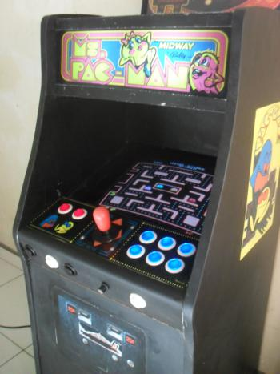
Arcade Mini Pacman/Galaxian
by Guiga (atomo-rx) — Brazil
1m x 50 x 40cm mini arcade. Athlon XP 1.8, CRT 15", MaLa 1.74. 7 emulators.

Atomic Mame Bartop
by nickelo
Portable bartop with removable controllers. 21" Sony Trinitron. Athlon 2x, SSD. RetrOS x64 and MaLa 1.74.

Basement Barcade
by capt6069
Custom built for 2-player horizontal and vertical play. Tall enough to integrate in the bar. P4 2.8GHz.

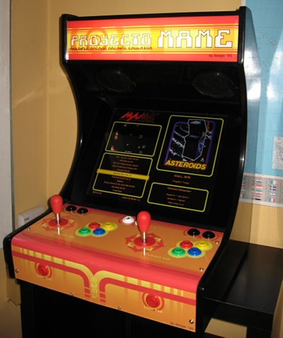
Berger's MAME Cabinet
by Gerardo (aka Berger)
P4 1.9GHz, nVidia FX5200, Ultimarc IPAC FS32, TFT 19" 1280x1024. MAME 0.133 and MaLa 1.05.

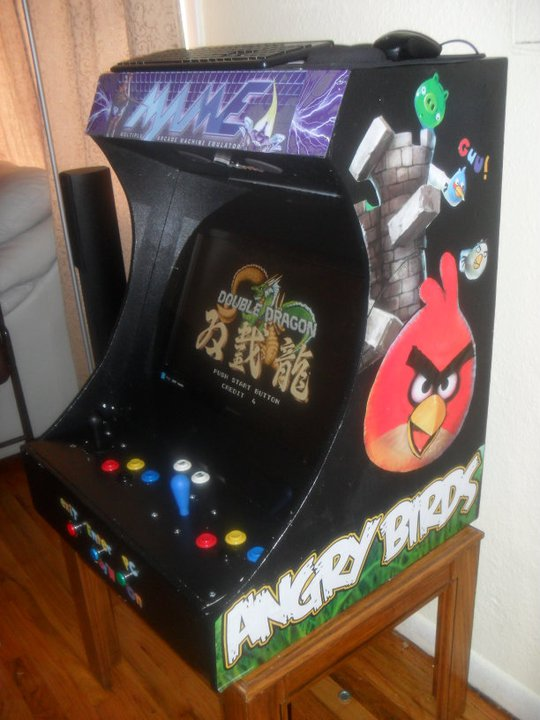
Chavo's Cabinet
by lllBorusslll
2 player cabinet running MaLa with MAME.

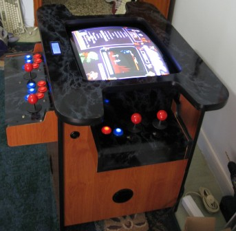
Cocktail
by sadosp
Cocktail machine. MAME, Atari 2600, NES, SNES and Genesis. Original 19" arcade monitor, Ultimarc ArcadeVGA.

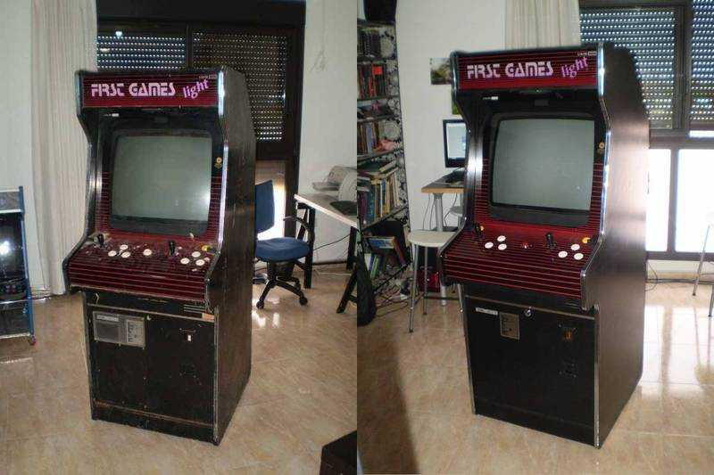
First Games Light
by nickelo
Spanish generic machine 100% restored. Hantarex MTC9110 25", P4 3.2GHz. Boots in 15-20 seconds from Compact Flash.

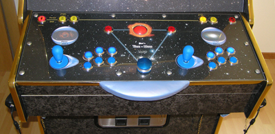
Heini's Time Warp
by El Sattlero
LED buttons, Spinner, Trackball, 2 Lightguns, 25" Hantarex, 90° rotatable. Ultimarc J-Pac and ArcadeVGA.

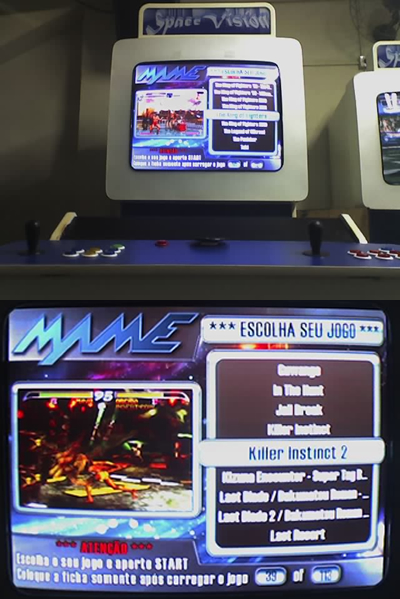
House Multi Arcade Ver. 1.0
by Fabinho — Brazil
AMD Athlon 64 X2 4600+, 2GB RAM, 29" Monitor 15kHz. MaLa v1.05 and MAME v0.129.

Irish Shamrock
by wave8
Custom Mini-ITX cabinet with Intel Atom and 2GB RAM running MaLa.

Jumbo Quadro "Deluxe"
by EDE
Auto-rotating arcade monitor controlled by hardware and the MaLa RotateScreen plugin. P4 3GHz, JPAC/OptiPAC/AVGA2.

Kaptain's Arcade Klassics
by kaptainsteve
Dynamo cabinet with Street Fighter control panel running MAME and MaLa.

Kaptain's Kabinet 2
by KaptainSteve
Dynamo with joystick, buttons and trackball on Ultimarc interfaces. MaLa and MAME 126.

Kevin's Custom Galaga
by DJ Unix
Scratch-built Galaga retaining the original look. Running MaLa with Speech and UltraStick Mapper plugins.

Lenths Arcade Machine
by Lenth
Work in progress. Aluminum stand powder-coated space blue, clear top visible, wireless video sender, 250W 6x9 speakers, cold cathode lighting inside.

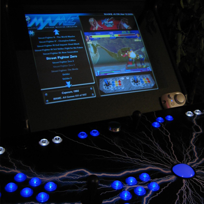

LSFD Arcade
by capt6069
Built for the fire house. Trash-picked Trivia Whiz cab with MAME, NES, SNES, Genesis, TG16, GBA and GB.

MALA on Slik Stik Cab
by amiga2000
Standard MaLa layout with extensive arcade cab media. HD video on YouTube.

Markcade
by markran
P4 3.2GHz, ArcadeVGA, Wells Gardner 9400, RGB LED buttons and trackball, LEDWiz, Happ joysticks, Tornado Spinner. Custom LED animations.

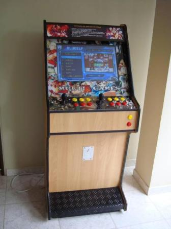
Mini Arcade de Piso y de Pared
by Anthony Diaz — Colombia
Two models — one wall-mounted KOF themed, one floor standing. Athlon 64 X2 3800MHz, 4GB RAM, 320GB HDD, GeForce 512MB. Running WinXP, MAMEPGUI and MaLa. American joysticks and Zippy microswitches.

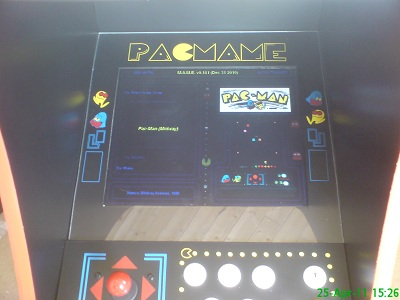
Mini PacMame
by WaVeY
3/4 size Pacman cabinet. Built from scratch in 3 weeks. MaLa frontend with 8000 MAME ROMs.

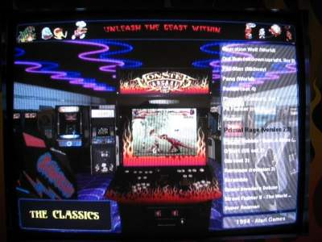
MONSTER ARCADE
by Dna Disturber
MaLa with LedBlinky plugin. Scrolling the game list plays the game video on a virtual cabinet matching the real one.

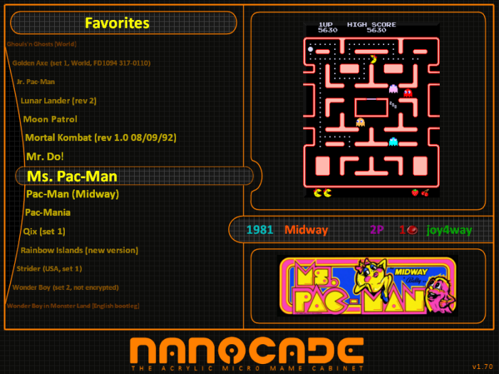
Nanocade
by Lokesen
Built from the Nanocade KIT — an acrylic micro MAME cabinet.

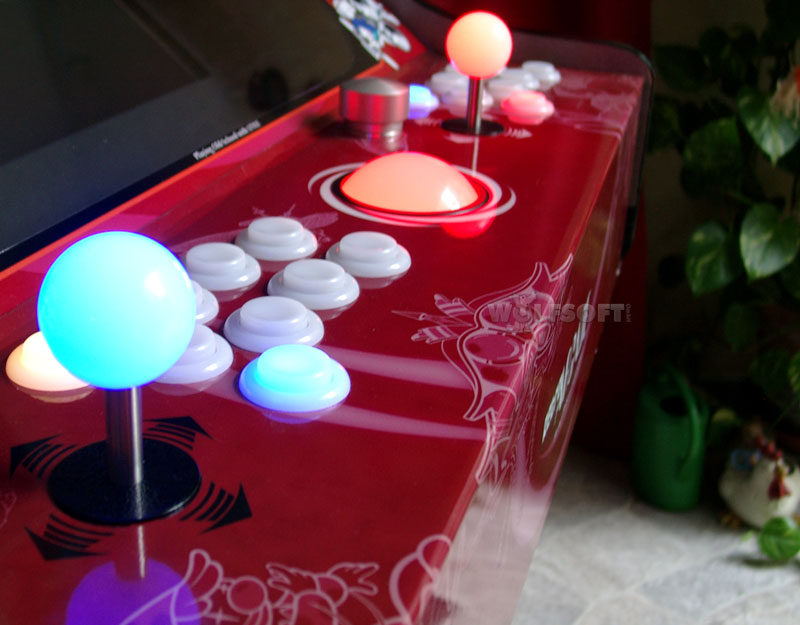
Retroarcade
by wolfsoft
Auto-rotating screen. LedBlinky for coloured buttons. Starcom plugin for rotation. 25" CRT or 21" LCD.

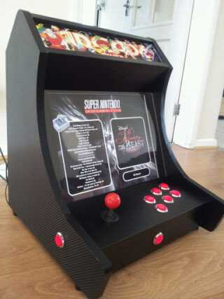
Richie Tron 2000
by Retrokid
Bartop with 17" monitor, Dell SX2700 PC, 4GB RAM. CNC cut panels. MaLa FE.

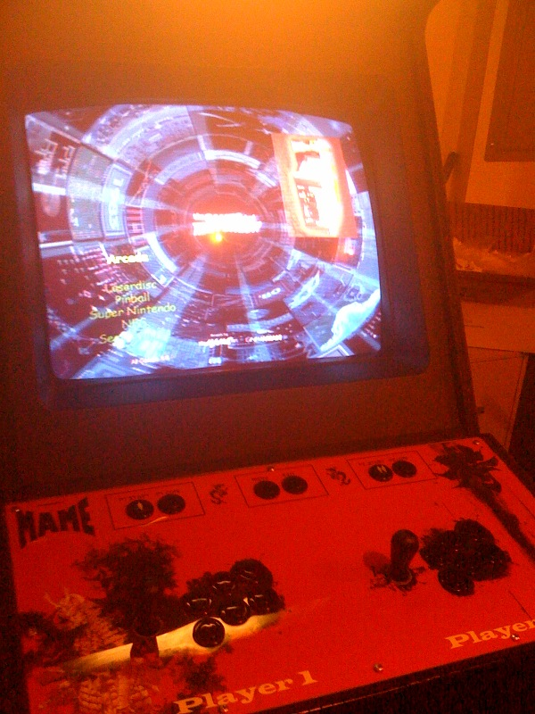
Samurai Cabinet
by Spear of Destiny
Built from an NFL Blitz machine with custom marquee and control panel artwork.

Space Fractal's Cab
by Space Fractal
Running MaLa with the U360 plugin.

Space Invaders Cocktail
by Jonno
First cab. Chose MaLa for better vertical layout support. AMD Athlon II X2 2.7GHz, 4GB RAM.

Takoni's Maka
by takoni
Original black Dandy cabinet rebuilt into a Galaga cabinet.

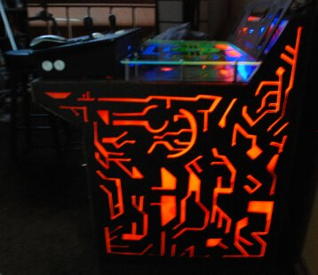
Tron
by Markus (Kevin Flynn) Hughes
Retro cab dedicated to the Tron movie and arcade game. Fluorescent paint, black lights, plexiglas.

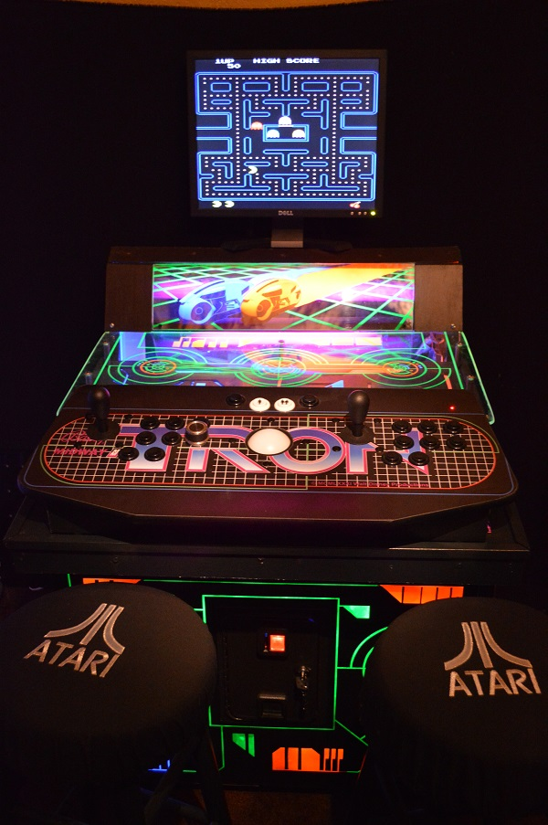
Tron (Updated)
by Markus Hughes
Updated photos of Markus Hughes's Tron cabinet.

Universal Cab
by Swindus
German universal cab with rotatable 28" real arcade monitor. AMD Sempron 2.8GHz, ArcadeVGA and J-Pac.

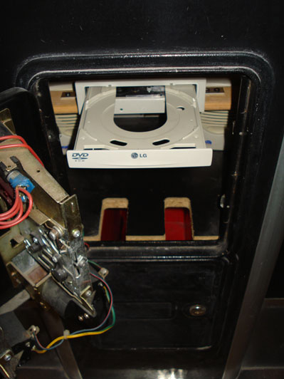
Videogame
by Mr.T
JAMMA PLUS cab 175x85x65cm. Philips 25" FLAT, P4 2.8GHz, ArcadeVGA. Accepts Italian 500-lire coins!

Wall Mounted Cab
by Swindus
Rotatable 17" LCD with replaceable control panel. P III 650MHz, 512MB, Win98SE. MaLa Hardware for lit buttons.